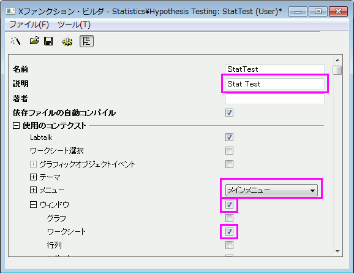

ウィザードは一連のダイアログからなるグラフィカルユーザインターフェイス（GUI）を使い、ステップごとに設定し、処理を完了できます。ウィザードを使うと、複雑な操作を簡単に行えるようになります。Originはユーザがウィザードを開発できるように、OriginCのクラスをいくつか提供しています。ウィザード内の各ステップのダイアログはXファンクションを利用して開発できます。
この例題では、ウィザードを使って1列のデータに対する正規性の検定を行い、1標本のt検定を実行します。正規性の検定の結果は1標本のt検定内で共有できます。
| Note:このチュートリアルを行うには、Develop Kitが必要です。 |
必要なOriginのバージョン:Origin 8.1SR0
XファンクションNormalityTestとOnetTestには、同じ変数”prob”があります。これは共有変数で、ソースファイルで宣言されます。
次のスクリプトをStatTestWiz.h ファイルに追加します。
#ifndef __STAT_TEST_WIZ_H__ #define __STAT_TEST_WIZ_H__ #include <..\OriginLab\XFWiz.h> #include <..\OriginLab\XFCore.h> #include <..\OriginLab\XFWizard_utils.h> class StatTestWizCore :public XFCore { public: StatTestWizCore(); public: void ChangeGoal(int nGoal); DataRange GetRange(); int nStep; protected: }; int stat_test_run_wiz_nodlg(LPCSTR lpcszThemeName = NULL, const XFWizTheme *pXFWizTheme = NULL, const XFWizInputOutputRange *pXFWizIO = NULL, DWORD dwOPUID = 0); int stat_test_open_wiz_dlg(LPCSTR lpcszThemeName = NULL, const XFWizTheme *pXFWizTheme = NULL, const XFWizInputOutputRange *pXFWizIO = NULL, DWORD dwOPUID = 0); #endif //__STAT_TEST_WIZ_H__
「保存」ボタンをクリックして、StatTestWiz.h ファイルを保存します。
次のスクリプトをStatTestWiz.cファイルに追加します。
/////////////////////////////////////////////////////////////////////////////////// #include <..\OriginLab\XFWizManager.h> #include <..\OriginLab\WizOperation.h> #include <..\OriginLab\XFWizNavigation.h> #include <..\OriginLab\XFWizScript.h> #include <..\OriginLab\XFWizDlg.h> /////////////////////////////////////////////////////////////////////////////////// // ヘッダファイルをここに入力します。 #include "StatTestWiz.h" enum { GOAL_ALL = 0, GOAL_SIMPLE, }; //3つのXファンクションの名前 #define STR_STEP_GOAL "StatTestWizGoal" #define STR_STEP_Normal "NormalityTest" #define STR_STEP_TTest "OnetTest" //ウィザード内で表示するステップの名前 #define STR_LABEL_STEP_GOAL "Goal" #define STR_LABEL_STEP_Normal "Normality Test" #define STR_LABEL_STEP_TTest "One-Sample t-test" /////////////////////////////////////////////////////////////////////////////////// //StatTestWizTheme クラス class StatTestWizTheme :public XFWizTheme { public: StatTestWizTheme(); }; //XファンクションNormalityTestとOnetTestで共有されている変数、probの名前 #define STR_GETN_VAR_SHARED_NProb "prob" StatTestWizTheme::StatTestWizTheme() :XFWizTheme() { m_saSharedList.Add(STR_GETN_VAR_SHARED_NProb); //共有変数を追加する } /////////////////////////////////////////////////////////////////////////////////// class StatTestWizInputOutputRange :public XFWizInputOutputRange { }; /////////////////////////////////////////////////////////////////////////////////// //StatTestWizManager クラス #define STR_CLASS_NAME_TEST "StatTestWiz" #define TEST_VERSION_NUMBER 1.0 class StatTestWizManager :public XFWizManager { public: StatTestWizManager(LPCSTR lpcszThemeName = NULL, const XFWizTheme *pXFWizTheme = NULL, const XFWizInputOutputRange *pXFWizIO = NULL, DWORD dwUIDOp = 0); protected: virtual double GetVersion() { return TEST_VERSION_NUMBER; } virtual XFCore* CreateXFCore() { return new StatTestWizCore; } virtual XFWizTheme* CreateXFWizTheme() { return new StatTestWizTheme; } virtual XFWizInputOutputRange* CreateXFWizInputOutputRange() { return new StatTestWizInputOutputRange; } virtual string GetClassName() { return STR_CLASS_NAME_TEST; } }; StatTestWizManager::StatTestWizManager(LPCSTR lpcszThemeName, const XFWizTheme *pXFWizTheme, const XFWizInputOutputRange *pXFWizIO, DWORD dwUIDOp) :XFWizManager(lpcszThemeName, pXFWizTheme, pXFWizIO, dwUIDOp) { StringArray saMapXFNames = {STR_STEP_GOAL, STR_STEP_Normal, STR_STEP_TTest}; StringArray saMapXFLabels = {STR_LABEL_STEP_GOAL, STR_LABEL_STEP_Normal, STR_LABEL_STEP_TTest}; m_saMapXFNames = saMapXFNames; m_saMapXFLabels = saMapXFLabels; ASSERT( m_saMapXFNames.GetSize() == m_saMapXFLabels.GetSize() ); StringArray saDefaultXFNames = {STR_STEP_GOAL, STR_STEP_Normal, STR_STEP_TTest}; m_saDefaultXFNames = saDefaultXFNames; m_strRunDlgName = _L("Stat Test"); } /////////////////////////////////////////////////////////////////////////////////// //StatTestWizCore クラス StatTestWizCore::StatTestWizCore() :XFCore() { StringArray vsXFsRecalculateShown = {STR_STEP_GOAL}; m_vsXFsRecalculateShown = vsXFsRecalculateShown; nStep = GOAL_ALL; } //ゴールステップ（目標ステップ）の手順設定 void StatTestWizCore::ChangeGoal(int nGoal) { XFWizNavigation *pXFWizNavg = (XFWizNavigation *)GetXFWizNavigation(); ASSERT(pXFWizNavg); nStep = nGoal; if ( pXFWizNavg ) { StringArray saXFNames; saXFNames.Add(STR_STEP_GOAL); switch (nGoal) { case GOAL_ALL: saXFNames.Add(STR_STEP_Normal); saXFNames.Add(STR_STEP_TTest); break; case GOAL_SIMPLE: saXFNames.Add(STR_STEP_TTest); break; } pXFWizNavg->SetSteps(saXFNames); } } //ゴールステップで入力データ範囲を取得 DataRange StatTestWizCore::GetRange() { XFWizNavigation *pXFWizNavg = (XFWizNavigation*)GetXFWizNavigation(); XFWizInputOutputRange* pIORange = pXFWizNavg->GetXFWizInputOutputRange(); DataRange drInput; if(!pIORange) { error_report("Fail to get io ranges!"); return drInput; } Array<DataRange&> drs; //入力データ範囲を取得 if(!pIORange->Get(&drs, STR_STEP_GOAL, true)) { error_report("Fail to get range from WizCore!"); return drInput; } drInput = drs.GetAt(0); return drInput; } /////////////////////////////////////////////////////////////////////////////////// int stat_test_run_wiz_nodlg(LPCSTR lpcszThemeName, const XFWizTheme *pXFWizTheme, const XFWizInputOutputRange *pXFWizIO, DWORD dwOPUID) { TEMPLATE_run_wiz_nodlg(StatTestWizManager, lpcszThemeName, pXFWizTheme, pXFWizIO, dwOPUID) } int stat_test_open_wiz_dlg(LPCSTR lpcszThemeName, const XFWizTheme *pXFWizTheme, const XFWizInputOutputRange *pXFWizIO, DWORD dwOPUID) { TEMPLATE_open_wiz_dlg(StatTestWizManager, lpcszThemeName, pXFWizTheme, pXFWizIO, dwOPUID) } int stat_test_run_wiz(UINT msg, const XFWizTheme *pXFWizTheme, const XFWizInputOutputRange *pXFWizIO, DWORD dwOPUID, int nExeMode) { TEMPLATE_run_wiz(StatTestWizManager, msg, pXFWizTheme, pXFWizIO, dwOPUID, nExeMode) }
保存ボタンをクリックして、StatTestWiz.c ファイルを保存します。
StatTestWiz.c に含まれているファイルは、StatTestをコンパイルしないとワークスペースに存在しないので、XファンクションStatTestをコンパイルします。実際には、StatTestWiz.hがXファンクションStatTestに組み込まれているので、StatTestWiz.cはStatTestをコンパイルした時に自動的にコンパイルされます。
開いたXファンクションビルダで、開くボタンをクリックしてStatTestのXファンクションを開きます。Xファンクションをコードビルダで編集するをクリックし、次のスクリプトを入力します。
#include <..\OriginLab\XFWiz.h> #include <..\OriginLab\WizOperation.h> #include <..\OriginLab\XFCore.h> #include <..\OriginLab\XFWizNavigation.h> #include <..\OriginLab\XFWizManager.h> #include <..\OriginLab\XFWizScript.h> #include <..\OriginLab\XFWizDlg.h> #include <..\OriginLab\XFWizard_utils.h> #include <..\OriginLab\WksOperation.h> #include <event_utils.h> #include "StatTestWiz.h"
ダイアログのモードを指定する、関数内容を追加します。
if( script ) stat_test_run_wiz_nodlg(tn); else stat_test_open_wiz_dlg(tn);
ウィザードが開く前にこのウィンドウを表示しないように、関数内容を追加します。
nRet = XFEVT_PROCEED_NO_DLG;
コンパイルボタンをクリックしてファイルをコンパイルします。NLSFに戻るボタンをクリックすると、Xファンクションビルダに戻ります。XファンクションビルダではOXFファイルを保存するをクリックしてXファンクションを保存します。
XファンクションStatTestWizGoalを開きます。Xファンクションをコードビルダで編集するボタンをクリックして、以下のスクリプトを入力します。
#include "StatTestWiz.h"
この関数は入力データ範囲が1列か否かを判断します。
static bool _check_input(const TreeNode trGetN, string& strErr) { TreeNode trRange = trGetN.input; DataRange drInput; drInput.Create(trRange.strVal); if( drInput.GetNumRanges() == 0 ) { strErr = "Input can't be empty, and it should be a valid column."; return false; } else { if( drInput.GetNumRanges() == 1) { Worksheet wksInput; int nC1, nC2; drInput.GetRange(wksInput, nC1, nC2); if( nC1 == nC2 ) return true; } strErr = "Please select one column."; return false; } }
ダイアログを更新する関数内容を追加します。
StatTestWizCore* pstatwc = (StatTestWizCore*)get_xf_core_handler(trGetN); ASSERT(pstatwc); //ウィザードページを更新する if ( 0 == lstrcmp(lpcszNodeName, "goal") ) pstatwc->ChangeGoal(trGetN.goal.nVal); //エラーメッセージはダイアログの下部に表示され、 //データ選択範囲が正しくない場合、OKボタンは無効になる bOKEnable = _check_input(trGetN, strErrMsg); return false;
コンパイルボタンをクリックしてファイルをコンパイルします。NLSFに戻るボタンをクリックしてXファンクションビルダに戻り、OXFファイルを保存するをクリックしてXファンクションを保存します。
Xファンクション NormalityTest を開きます。Xファンクションをコードビルダで編集するボタンをクリックし、以下のスクリプトを入力します。
#include "StatTestWiz.h" #include <XFbase.h>
この関数は正規性の検定結果ダイアログの編集ボックスを更新する為のものです。
static void _update_GUI(TreeNode& trGetN) { vector vRes; vRes = _norm_test(trGetN.nXFCorePointer.nVal, trGetN.type.nVal); trGetN.stat.dVal = vRes[0]; trGetN.df.dVal = vRes[1]; trGetN.prob.dVal = vRes[2]; }
この関数は、ダイアログの下に表示された文字列の更新を行います。
static void _update_strErr(const TreeNode tr, string& strErr) { if(tr.prob.dVal >= 0.05 && tr.prob.dVal <= 1) strErr = "At the 0.05 level, the data was significantly drawn from a normally distributed population."; else if(tr.prob.dVal < 0.05 && tr.prob.dVal >= 0) strErr = "At the 0.05 level, the data was not significantly drawn from a normally distributed population."; else strErr = "There is not enough information to draw a conclusion."; }
文字列は2行に分かれて、ページに表示されます。スクリプトでは1行のコマンドにしてください。
この関数は、関連するXファンクションを使って、正規性の検定を行う時に使用します。
static vector _norm_test(const int nXFCorePointer, const int nType) { StatTestWizCore* pstatwc = (StatTestWizCore*)get_xf_core_handler(nXFCorePointer); ASSERT(pstatwc); vector vRes(3); vRes[2] = -1; DataRange drInput; drInput = pstatwc->GetRange(); if( !drInput ) return vRes; vector<string> vsXFName = {"swtest","kstest","lillietest"}; XFBase xfNorm(vsXFName[nType]); if( !xfNorm.SetArg("irng", drInput) ) { error_report("Failed to set argument image type"); return vRes; } if( !xfNorm.SetArg("stat", vRes[0]) ) { error_report("Failed to set argument image type"); return vRes; } if( !xfNorm.SetArg("df", vRes[1]) ) { error_report("Failed to set argument image type"); return vRes; } if( !xfNorm.SetArg("prob", vRes[2]) ) { error_report("Failed to set argument image type"); return vRes; } if( !xfNorm.Evaluate() ) { error_report("Failed to evaluate the stats X-Function."); return vRes; } return vRes; }
進むボタンをクリックした時に結果をワークシートに出力するよう、関数内容を更新します。
DataRange drInput; StatTestWizCore* pstatwc = (StatTestWizCore*)get_xf_core_handler(nXFCorePointer); ASSERT(pstatwc); drInput = pstatwc->GetRange(); if( !drInput ) return; string strBook, strSheet; if(!drInput.GetBookSheet(strBook, strSheet)) { error_report("Workbook and worksheet names can't be obtained."); return; } WorksheetPage wpData(strBook); int nLayer = wpData.AddLayer("Normality Test"); if(nLayer >= 0) { Worksheet wksRes = wpData.Layers(nLayer); vector<string> vsTypeName = {"Shapiro-Wilk","Kolmogorov-Smirnov","Lilliefors"}; vector<string> vsNProb = {"Prob<W", "Prob>D", "Prob>D"}; vector<string> vsParaName = {"Statistic", "DF", ""}; vsParaName[2] = vsNProb[type]; vector vRes; vRes = _norm_test(nXFCorePointer, type); wksRes.Columns(1).SetLongName(vsTypeName[type]); for(int ii=0; ii<3; ii++) { wksRes.SetCell(ii, 0, vsParaName[ii], false); wksRes.SetCell(ii, 1, vRes[ii]); } } else { error_report("New worksheet can't be created."); }
正規性の検定方法が変化すると、結果が変わるように関数内容を更新します。ダイアログの下に表示される文字列も更新されます。
_update_GUI(trGetN); _update_strErr(trGetN, strErrMsg); return true;
結果用の編集ボックスをグレーアウトし、結果をダイアログ内に表示するよう、関数内容を更新します。
trGetN.stat.Enable = false; trGetN.df.Enable = false; trGetN.prob.Enable = false;
コンパイルボタンをクリックしてファイルをコンパイルします。NLSFに戻るボタンをクリックし、Xファンクションビルダに戻り、OXFファイルの保存するをクリックしてXファンクションを保存します。
XファンクションOnetTestを開きます。Xファンクションをコードビルダで編集するボタンをクリックし、以下のスクリプトを入力します。
#include "StatTestWiz.h" #include <XFbase.h>
const vector<string> vsNull = {"Mean = ","Mean <= ","Mean >= "}; const vector<string> vsAlter = {"Mean <> ","Mean > ","Mean < "}; const vector<string> vsAcceptNull = {"Not significantly different from","Not significantly greater than","Not significantly less than"}; const vector<string> vsRejectNull = {"significantly different from","significantly greater than","significantly less than"}; const vector<string> vsProb = {"Prob>|t|", "Prob>t", "Prob<t"};
この関数は、Null編集ボックスを更新するのに使用します。
static void _update_null(TreeNode& trGetN, bool bMean = false) { string strNull; strNull = vsNull[trGetN.tail.nVal] + ftoa(trGetN.mean.dVal); trGetN.null.strVal = strNull; if(bMean) { string strAlter = vsAlter[0] + ftoa(trGetN.mean.dVal) + "|"; strAlter = strAlter + vsAlter[1] + ftoa(trGetN.mean.dVal) + "|"; strAlter = strAlter + vsAlter[1] + ftoa(trGetN.mean.dVal); trGetN.tail.SetAttribute(STR_COMBO_ATTRIB, strAlter); } }
この関数は、信頼水準編集ボックスの値を確認するのに使用します。
static bool _check_sig_level(TreeNode& trGetN, string& strErr) { if( trGetN.siglevel.dVal > 0 && trGetN.siglevel.dVal < 1 ) { return true; } else { strErr = "Significance Level should be between 0 and 1."; return false; } }
この関数は、P値を基にしたt検定の結論の文字列を定義するのに使用します。
static void _update_strErr(const TreeNode tr, string& strErr) { if(tr.tprob.dVal >= tr.siglevel.dVal && tr.tprob.dVal <= 1) strErr.Format("Null Hypothesis is %s%s.\r\nAlternative Hypothesis is %s%s. At the %s level, the population mean is %s the test mean(%s).", vsNull[tr.tail.nVal], ftoa(tr.mean.dVal), vsAlter[tr.tail.nVal], ftoa(tr.mean.dVal), ftoa(tr.siglevel.dVal), vsAcceptNull[tr.tail.nVal], ftoa(tr.mean.dVal) ); else if(tr.tprob.dVal < tr.siglevel.dVal && tr.tprob.dVal >= 0) strErr.Format("Null Hypothesis is %s%s.\r\nAlternative Hypothesis is %s%s. At the %s level, the population mean is %s the test mean(%s).", vsNull[tr.tail.nVal], ftoa(tr.mean.dVal), vsAlter[tr.tail.nVal], ftoa(tr.mean.dVal), ftoa(tr.siglevel.dVal), vsRejectNull[tr.tail.nVal], ftoa(tr.mean.dVal) ); else strErr = "There is not enough information to draw a conclusion."; }
実際のページでは、コマンドは複数行に分けれらて表示されます。スクリプトでは1行のコマンドにしてください。
この関数は、ダイアログ内の編集ボックスに表示する結果を更新するのに使用します。
static void _update_GUI(TreeNode& trGetN) { vector vRes; vRes = _one_sample_t_test(trGetN.nXFCorePointer.nVal, trGetN.mean.dVal, trGetN.tail.dVal, trGetN.siglevel.dVal); trGetN.stat.dVal = vRes[0]; trGetN.df.dVal = vRes[1]; trGetN.tprob.dVal = vRes[2]; trGetN.lcl.dVal = vRes[4]; trGetN.ucl.dVal = vRes[5]; }
この関数は、Xファンクションを使って1標本t検定を実行する際に使用します。
static vector _one_sample_t_test(const int nXFCorePointer, const double dMean, const int nTail, const double dSiglevel) { DataRange drInput; StatTestWizCore* pstatwc = (StatTestWizCore*)get_xf_core_handler(nXFCorePointer); ASSERT(pstatwc); vector vRes(6); vRes[2] = -1; drInput = pstatwc->GetRange(); if( !drInput ) return vRes; vRes[3] = 100 - 100*dSiglevel; XFBase xfTTest("ttest1"); if( !xfTTest.SetArg("irng", drInput) ) { error_report("Failed to set argument irng"); return vRes; } if( !xfTTest.SetArg("mean", dMean) ) { error_report("Failed to set argument mean"); return vRes; } if( !xfTTest.SetArg("tail", nTail) ) { error_report("Failed to set argument tail"); return vRes; } if( !xfTTest.SetArg("alpha", dSiglevel) ) { error_report("Failed to set argument alpha"); return vRes; } if( !xfTTest.SetArg("stat", vRes[0]) ) { error_report("Failed to set argument stat"); return vRes; } if( !xfTTest.SetArg("df", vRes[1]) ) { error_report("Failed to set argument df"); return vRes; } if( !xfTTest.SetArg("prob", vRes[2]) ) { error_report("Failed to set argument prob"); return vRes; } if( !xfTTest.SetArg("lcl", vRes[4]) ) { error_report("Failed to set argument lcl"); return vRes; } if( !xfTTest.SetArg("ucl", vRes[5]) ) { error_report("Failed to set argument ucl"); return vRes; } if( !xfTTest.Evaluate() ) { error_report("Failed to evaluate the ttest1 X-Function."); return vRes; } return vRes; }
完了ボタンをクリックすると結果をワークシートに出力するように関数内容を更新します。
DataRange drInput; StatTestWizCore* pstatwc = (StatTestWizCore*)get_xf_core_handler(nXFCorePointer); ASSERT(pstatwc); drInput = pstatwc->GetRange(); if( !drInput ) return ; string strBook, strSheet; if(!drInput.GetBookSheet(strBook, strSheet)) { error_report("Workbook and worksheet names can't be obtained."); return; } WorksheetPage wpData(strBook); int nLayer = wpData.AddLayer("One-Sample t-test"); if(nLayer >= 0) { Worksheet wksRes = wpData.Layers(nLayer); vector<string> vsParaName = {"t Statistic", "DF","", "Conf.Levels in %", "Lower Limits", "Lower Limits"}; vsParaName[2] = vsProb[tail]; vector vRes; vRes = _one_sample_t_test(nXFCorePointer, mean, tail, siglevel); wksRes.SetSize(-1, 4); wksRes.Columns(0).SetLongName("Test Statistics"); string strNull = "Null Hypothesis is " + vsNull[tail] + ftoa(mean); wksRes.Columns(1).SetLongName(strNull); wksRes.Columns(3).SetLongName("Confidence Intervals for Mean"); for(int ii=0; ii<3; ii++) { wksRes.SetCell(ii, 0, vsParaName[ii], false); wksRes.SetCell(ii, 1, vRes[ii]); wksRes.SetCell(ii, 2, vsParaName[ii + 3], false); wksRes.SetCell(ii, 3, vRes[ii + 3]); } } else { error_report("New worksheet can't be created."); }
結果を更新し、その結果に基づいた結論をダイアログの下部に表示するために、関数内容を更新します。ダイアログで設定が変われば、平均と仮説が変わるとNull編集ボックスは更新され、信頼水準編集ボックスの値もチェックされます。
if( 0 == lstrcmp(lpcszNodeName, "mean") ) _update_null(trGetN, true); if( 0 == lstrcmp(lpcszNodeName, "tail") ) _update_null(trGetN); if( 0 == lstrcmp(lpcszNodeName, "siglevel") ) bOKEnable = _check_sig_level(trGetN, strErrMsg); _update_GUI(trGetN); _update_strErr(trGetN, strErrMsg); return false;
ダイアログのコントロールを表示/非表示または無効にするよう、関数内容を更新します。
StatTestWizCore* pstatwc = (StatTestWizCore*)get_xf_core_handler(trGetN.nXFCorePointer.nVal); ASSERT(pstatwc); trGetN.prob.Show = 1 - pstatwc->nStep; trGetN.prob.Enable = false; trGetN.null.Enable = false; trGetN.stat.Enable = false; trGetN.df.Enable = false; trGetN.tprob.Enable = false; trGetN.lcl.Enable = false; trGetN.ucl.Enable = false;
コンパイルボタンをクリックしてファイルをコンパイルします。NLSFに戻るボタンをクリックして、Xファンクションビルダに戻ります。OXFファイルを保存するボタンをクリックして、Xファンクションを保存します。
Originを閉じます。Originを再度開くとOriginメニュー内の統計：仮説検定の中にStat Testが追加されています。
次のサンプルは、ウィザードの使用例です。